Last updated: 2022-05-31
Checks: 7 0
Knit directory: rare-mutation-detection/
This reproducible R Markdown analysis was created with workflowr (version 1.6.2). The Checks tab describes the reproducibility checks that were applied when the results were created. The Past versions tab lists the development history.
Great! Since the R Markdown file has been committed to the Git repository, you know the exact version of the code that produced these results.
Great job! The global environment was empty. Objects defined in the global environment can affect the analysis in your R Markdown file in unknown ways. For reproduciblity it’s best to always run the code in an empty environment.
The command set.seed(20210916) was run prior to running the code in the R Markdown file. Setting a seed ensures that any results that rely on randomness, e.g. subsampling or permutations, are reproducible.
Great job! Recording the operating system, R version, and package versions is critical for reproducibility.
Nice! There were no cached chunks for this analysis, so you can be confident that you successfully produced the results during this run.
Great job! Using relative paths to the files within your workflowr project makes it easier to run your code on other machines.
Great! You are using Git for version control. Tracking code development and connecting the code version to the results is critical for reproducibility.
The results in this page were generated with repository version e722dc0. See the Past versions tab to see a history of the changes made to the R Markdown and HTML files.
Note that you need to be careful to ensure that all relevant files for the analysis have been committed to Git prior to generating the results (you can use wflow_publish or wflow_git_commit). workflowr only checks the R Markdown file, but you know if there are other scripts or data files that it depends on. Below is the status of the Git repository when the results were generated:
Ignored files:
Ignored: .DS_Store
Ignored: .Rapp.history
Ignored: .Rhistory
Ignored: .Rproj.user/
Ignored: analysis/.DS_Store
Ignored: scripts/
Untracked files:
Untracked: ._.DS_Store
Untracked: DOCNAME
Untracked: analysis/._.DS_Store
Untracked: analysis/cache/
Untracked: analysis/calc_nanoseq_metrics.Rmd
Untracked: data/._metrics.rds
Untracked: data/ecoli/
Untracked: data/metadata/
Untracked: data/metrics_efficiency_nossc.rds
Untracked: data/mixtures
Untracked: data/ref/
Untracked: prototype_code/
Note that any generated files, e.g. HTML, png, CSS, etc., are not included in this status report because it is ok for generated content to have uncommitted changes.
These are the previous versions of the repository in which changes were made to the R Markdown (analysis/ecoli_K12.Rmd) and HTML (docs/ecoli_K12.html) files. If you’ve configured a remote Git repository (see ?wflow_git_remote), click on the hyperlinks in the table below to view the files as they were in that past version.
| File | Version | Author | Date | Message |
|---|---|---|---|---|
| Rmd | e722dc0 | Marek Cmero | 2022-05-31 | Fix typo, minor code update |
| html | b524238 | Marek Cmero | 2022-05-26 | Build site. |
| Rmd | afd79e5 | Marek Cmero | 2022-05-26 | Added revised model, in silico mixtures redone with 1 supporting read, added input cell estimates |
| html | 491e97d | Marek Cmero | 2022-05-19 | Build site. |
| Rmd | 434e8b9 | Marek Cmero | 2022-05-19 | Added in silico mixtures to navigation |
| html | faf9130 | Marek Cmero | 2022-05-18 | Build site. |
| Rmd | aacf423 | Marek Cmero | 2022-05-18 | Add coverage & variant results without requiring SSC |
| html | 4da2244 | Marek Cmero | 2022-05-11 | Build site. |
| Rmd | 71e857b | Marek Cmero | 2022-05-11 | Summary plot with all experimental factors |
| html | cc380cc | Marek Cmero | 2022-05-11 | Build site. |
| Rmd | 48b6d2e | Marek Cmero | 2022-05-11 | Added statistical tests with xGen rep 1 outlier removed |
| html | 7c4f403 | Marek Cmero | 2022-04-25 | Build site. |
| Rmd | 30f532f | Marek Cmero | 2022-04-25 | Include all samples in variant upset plot |
| html | fcb6578 | Marek Cmero | 2022-04-11 | Build site. |
| Rmd | 6f2c2bb | Marek Cmero | 2022-04-11 | Add family stats, boxplot fixes |
| html | a2f0a4a | Marek Cmero | 2022-04-08 | Build site. |
| Rmd | bffbb7e | Marek Cmero | 2022-04-08 | Repeat variant analysis without filtering strand bias |
| html | c246dc2 | Marek Cmero | 2022-04-07 | Build site. |
| Rmd | e10a166 | Marek Cmero | 2022-04-07 | Added variant call upset plot |
| html | a860101 | Marek Cmero | 2022-04-06 | Build site. |
| Rmd | 5dcf0e9 | Marek Cmero | 2022-04-06 | Added relationship plots |
| html | 81272b2 | Marek Cmero | 2022-04-05 | Build site. |
| Rmd | 43c95e3 | Marek Cmero | 2022-04-05 | Fix figures |
| html | f13e13a | Marek Cmero | 2022-04-05 | Build site. |
| Rmd | db75aa7 | Marek Cmero | 2022-04-05 | Added statistical tests |
| html | def2130 | Marek Cmero | 2022-04-05 | Build site. |
| Rmd | 1e5e696 | Marek Cmero | 2022-04-05 | Added descriptions for metrics. General plot improvements. |
| html | 953b83e | Marek Cmero | 2022-03-31 | Build site. |
| html | 05412f6 | Marek Cmero | 2022-03-27 | Build site. |
| Rmd | ea0ad82 | Marek Cmero | 2022-03-27 | Added singleton comparison + facet summary plots |
| html | 51aba0e | Marek Cmero | 2022-03-25 | Build site. |
| Rmd | a3895f7 | Marek Cmero | 2022-03-25 | Bug fix |
| html | ea4faf4 | Marek Cmero | 2022-03-25 | Build site. |
| Rmd | 5964f14 | Marek Cmero | 2022-03-25 | Added more comparison plots for ecoli K12 data |
| html | e5b39ad | Marek Cmero | 2022-03-25 | Build site. |
| Rmd | 1926d3d | Marek Cmero | 2022-03-25 | added K12 ecoli metrics |
library(ggplot2)
library(data.table)
library(dplyr)
library(here)
library(tibble)
library(stringr)
library(Rsamtools)
library(GenomicRanges)
library(seqinr)
library(parallel)
library(readxl)
library(patchwork)
library(RColorBrewer)
library(UpSetR)
library(vcfR)source(here('code/load_data.R'))
source(here('code/plot.R'))
source(here('code/efficiency_nanoseq_functions.R'))# Ecoli genome max size
# genome_max <- 4528118
genome_max <- c('2e914854fabb46b9_1' = 4661751,
'2e914854fabb46b9_2' = 67365)
cores = 8genomeFile <- here('data/ref/Escherichia_coli_ATCC_10798.fasta')
rinfo_dir <- here('data/ecoli/AGRF_CAGRF22029764_HJK2GDSX3/QC/read_info')
markdup_dir <- here('data/ecoli/AGRF_CAGRF22029764_HJK2GDSX3/QC/mark_duplicates')
qualimap_dir <- here('data/ecoli/AGRF_CAGRF22029764_HJK2GDSX3/QC/qualimap')
qualimap_cons_dir <- here('data/ecoli/AGRF_CAGRF22029764_HJK2GDSX3/QC/consensus/qualimap')
qualimap_cons_nossc_dir <- here('data/ecoli/AGRF_CAGRF22029764_HJK2GDSX3/QC/consensus/qualimap_nossc')
metadata_file <- here('data/metadata/NovaSeq data E coli.xlsx')
variant_dir <- here('data/ecoli/AGRF_CAGRF22029764_HJK2GDSX3/variants')
variant_nossc_dir <- here('data/ecoli/AGRF_CAGRF22029764_HJK2GDSX3/variants_nossc')sample_names <- list.files(rinfo_dir) %>%
str_split('\\.txt.gz') %>%
lapply(., dplyr::first) %>%
unlist() %>%
str_split('_') %>%
lapply(., head, 2) %>%
lapply(., paste, collapse='-') %>%
unlist()
# load variant data
var_df <- load_variants(variant_dir, sample_names)
var_df_nossc <- load_variants(variant_nossc_dir, sample_names[-9])
# load and fetch duplicate rate from MarkDuplicates output
mdup <- load_markdup_data(markdup_dir, sample_names)
# get mean coverage for pre and post-consensus reads
qmap_cov <- get_qmap_coverage(qualimap_dir, sample_names)
qmap_cons_cov <- get_qmap_coverage(qualimap_cons_dir, sample_names)
qmap_cons_cov_nossc <- get_qmap_coverage(qualimap_cons_nossc_dir, sample_names[-9])
# uncomment below to calculate metrics
# # calculate metrics for nanoseq
# rlen <- 151; skips <- 5
# metrics_nano <- calc_metrics_new_rbs(rinfo_dir, pattern = 'Nano', cores = cores)
#
# # calculate metrics for xGen
# rlen <- 151; skips <- 8
# metrics_xgen <- calc_metrics_new_rbs(rinfo_dir, pattern = 'xGEN', cores = cores)
#
# metrics <- c(metrics_nano, metrics_xgen) %>% bind_rows()
# metrics$duplicate_rate <- as.numeric(mdup)
# metrics$duplex_coverage_ratio <- qmap_cov$coverage / qmap_cons_cov$coverage
# metrics$duplex_coverage_ratio[qmap_cons_cov$coverage < 1] <- 0 # fix when < 1 duplex cov
# metrics$sample <- gsub('-HJK2GDSX3', '', sample_names)
# cache metrics object
# saveRDS(metrics, file = here('data/metrics.rds'))
metrics <- readRDS(here('data/metrics.rds'))
# load metadata
metadata <- read_excel(metadata_file)
metadata$`sample name` <- gsub('_', '-', metadata$`sample name`)
# prepare for plotting
mm <- data.frame(melt(metrics))
mm$protocol <- 'NanoSeq'
mm$protocol[grep('xGEN', mm$sample)] <- 'xGen'
mm <- inner_join(mm, metadata, by=c('sample' = 'sample name'))
colnames(mm)[2] <- 'metric'
mm$nuclease <- paste(mm$`Mung bean unit`, mm$`S1 unit`, sep='+')Fraction of duplicate reads calculated by Picard’s MarkDuplicates. This is based on barcode-aware aligned duplicates mapping to the same 5’ positions for both read pairs. The NanoSeq Analysis pipeline states the optimal empirical duplicate rate is 75-76% (marked in the plot).
metric <- 'duplicate_rate'
ggplot(mm[mm$metric == metric,], aes(sample, value)) +
geom_histogram(stat = 'identity', position = 'dodge') +
theme_bw() +
coord_flip() +
geom_hline(yintercept = c(0.75, 0.76), alpha = 0.4) +
ggtitle(metric)
Shows the number of single-read families divided by the total number of reads. As suggested by Stoler et al. 2016, this metric can server as a proxy for error rate, as (uncorrected) barcode mismatches will manifest as single-read families. The lower the fraction of singletons, the better.
metric <- 'frac_singletons'
ggplot(mm[mm$metric == metric,], aes(sample, value)) +
geom_histogram(stat = 'identity', position = 'dodge') +
theme_bw() +
coord_flip() +
ggtitle(metric)
This is the same calculation as F-EFF in the NanoSeq Analysis pipeline:
“This shows the fraction of read bundles missing one of the two original strands beyond what would be expected under random sampling (assuming a binomial process). Good values are between 0.10-0.30, and larger values are likely due to DNA damage such as modified bases or internal nicks that prevent amplification of one of the two strands. Larger values do not impact the quality of the results, just reduce the efficiency of the protocol.”
This is similar to the singleton fraction, but taking into account loss of pairs due to sampling. The optimal range is shown by the lines.
metric <- 'drop_out_rate'
ggplot(mm[mm$metric == metric,], aes(sample, value)) +
geom_histogram(stat = 'identity', position = 'dodge') +
theme_bw() +
coord_flip() +
geom_hline(yintercept = c(0.1, 0.3), alpha = 0.4) +
ggtitle(metric)
Efficiency is the number of duplex bases divided by the number of sequenced bases. According the NanoSeq Analysis pipeline, this value is maximised at ~0.07 when duplicate rates and strand drop-outs are optimal.
metric <- 'efficiency'
ggplot(mm[mm$metric == metric,], aes(sample, value)) +
geom_histogram(stat = 'identity', position = 'dodge') +
theme_bw() +
coord_flip() +
geom_hline(yintercept = c(0.07), alpha = 0.4) +
ggtitle(metric)
GC deviation is the absolute difference between GC_BOTH and GC_SINGLE calculated by the NanoSeq Analysis pipeline. The lower this deviation, the better.
“GC_BOTH and GC_SINGLE: the GC content of RBs with both strands and with just one strand. The two values should be similar between them and similar to the genome average. If there are large deviations that is possibly due to biases during PCR amplification. If GC_BOTH is substantially larger than GC_SINGLE, DNA denaturation before dilution may have taken place.”
metric <- 'gc_deviation'
ggplot(mm[mm$metric == metric,], aes(sample, value)) +
geom_histogram(stat = 'identity', position = 'dodge') +
theme_bw() +
coord_flip() +
ggtitle(metric)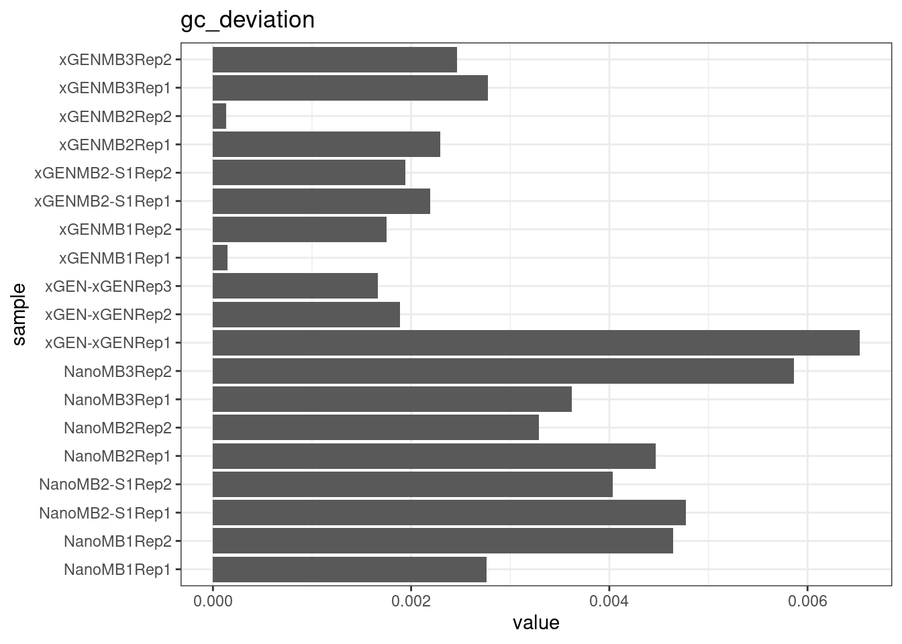
| Version | Author | Date |
|---|---|---|
| faf9130 | Marek Cmero | 2022-05-18 |
| 4da2244 | Marek Cmero | 2022-05-11 |
| cc380cc | Marek Cmero | 2022-05-11 |
| 7c4f403 | Marek Cmero | 2022-04-25 |
| fcb6578 | Marek Cmero | 2022-04-11 |
| a2f0a4a | Marek Cmero | 2022-04-08 |
| c246dc2 | Marek Cmero | 2022-04-07 |
| a860101 | Marek Cmero | 2022-04-06 |
| 81272b2 | Marek Cmero | 2022-04-05 |
| f13e13a | Marek Cmero | 2022-04-05 |
| def2130 | Marek Cmero | 2022-04-05 |
The mean sequence (pre-duplex) coverage divided by mean duplex coverage. Indicates the yield of how much duplex coverage we get at each sample’s sequence coverage. Abascal et al. report that their yield was approximately 30x (marked on the plot).
metric <- 'duplex_coverage_ratio'
ggplot(mm[mm$metric == metric,], aes(sample, value)) +
geom_histogram(stat = 'identity', position = 'dodge') +
theme_bw() +
coord_flip() +
geom_hline(yintercept = 30, alpha = 0.4) +
ggtitle(metric)
Comparison of family pair sizes between samples (these are calculated from total reads of paired AB and BA families).
ggplot(mm[mm$metric %like% 'family', ], aes(value, sample, colour = metric)) +
geom_point() +
coord_trans(x='log2') +
scale_x_continuous(breaks=seq(0, 94, 8)) +
theme(axis.text.x = element_text(size=5)) +
theme_bw() +
ggtitle('Family pair sizes')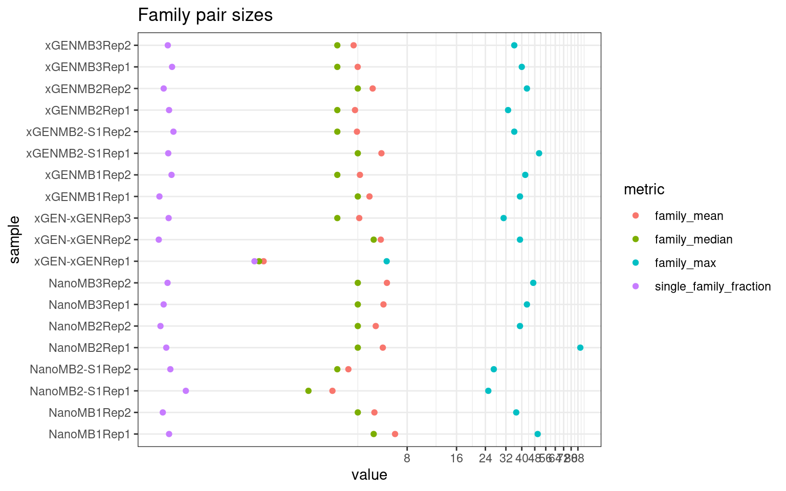
| Version | Author | Date |
|---|---|---|
| fcb6578 | Marek Cmero | 2022-04-11 |
The following plot shows:
ggplot(mm[mm$metric %like% 'pair|gt1', ], aes(value, sample, fill = metric)) +
geom_bar(stat='identity', position='dodge') +
theme_bw() +
ggtitle('Family statistics')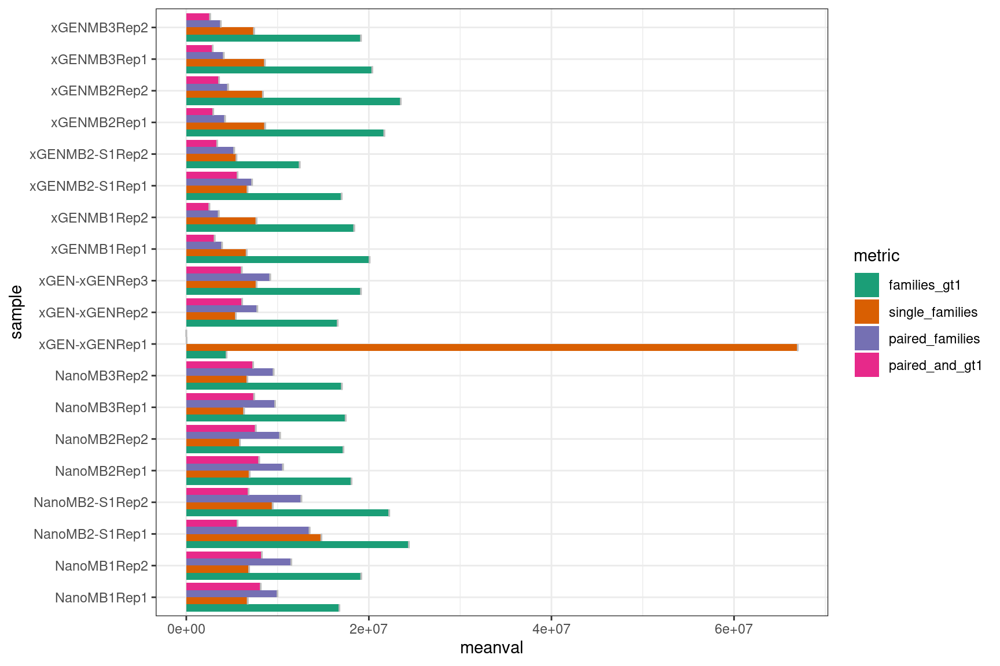
| Version | Author | Date |
|---|---|---|
| fcb6578 | Marek Cmero | 2022-04-11 |
Compare protocols and nucleases directly.
gg_prot <- list(geom_boxplot(outlier.shape = NA),
geom_jitter(width = 0.1, size = 2, aes(colour = nuclease, shape = nuclease)),
theme_bw(),
theme(legend.position = 'left'))
gg_nuc <- list(geom_boxplot(outlier.shape = NA),
geom_jitter(width = 0.1, size = 2, aes(colour = protocol, shape = protocol)),
theme_bw(),
theme(legend.position = 'right'))
# duplicate rate
metric <- 'duplicate_rate'
p1 <- ggplot(mm[mm$metric == metric,], aes(protocol, value)) +
gg_prot + geom_hline(yintercept = 0.81) +
ggtitle('Duplicate rate (line = optimal)')
p2 <- ggplot(mm[mm$metric == metric,], aes(nuclease, value)) +
gg_nuc + geom_hline(yintercept = 0.81) +
ggtitle('Duplicate rate (line = optimal)')
show(p1 + p2)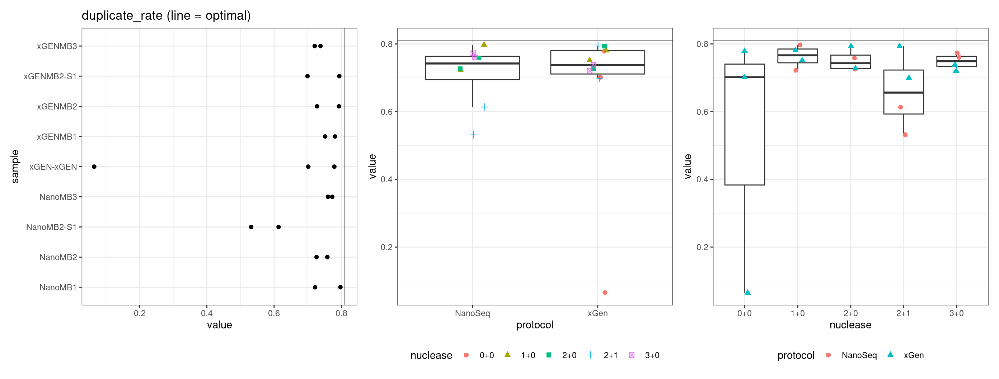
# singletons
metric <- 'frac_singletons'
p1 <- ggplot(mm[mm$metric == metric,], aes(protocol, value)) +
gg_prot +
ggtitle('Fraction of singleton reads')
p2 <- ggplot(mm[mm$metric == metric,], aes(nuclease, value)) +
gg_nuc +
ggtitle('Fraction of singleton reads')
show(p1 + p2)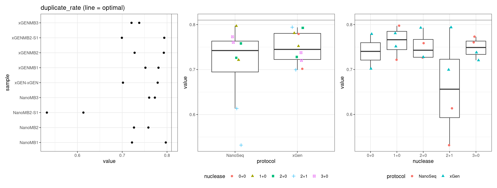
# drop-out rate
metric <- 'drop_out_rate'
p1 <- ggplot(mm[mm$metric == metric,], aes(protocol, value)) +
gg_prot + geom_hline(yintercept = c(0.1, 0.3)) + ylim(c(0,1)) +
ggtitle('Drop-out fraction\n(lines = optimal range)')
p2 <- ggplot(mm[mm$metric == metric,], aes(nuclease, value)) +
gg_nuc + geom_hline(yintercept = c(0.1, 0.3)) + ylim(c(0,1)) +
ggtitle('Drop-out fraction\n(lines = optimal range)')
show(p1 + p2)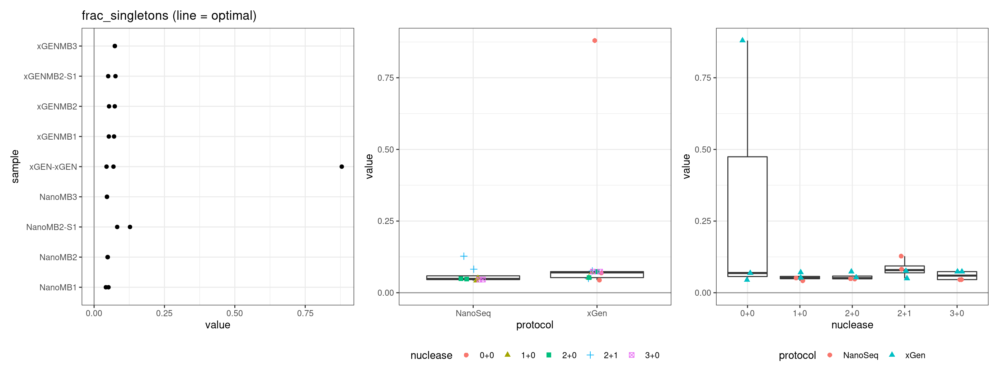
# efficiency
metric <- 'efficiency'
p1 <- ggplot(mm[mm$metric == metric,], aes(protocol, value)) +
gg_prot + geom_hline(yintercept = 0.07) +
ggtitle('Efficiency\n(line = optimal)')
p2 <- ggplot(mm[mm$metric == metric,], aes(nuclease, value)) +
gg_nuc + geom_hline(yintercept = 0.07) +
ggtitle('Efficiency\n(line = optomal)')
show(p1 + p2)
# GC deviation
metric <- 'gc_deviation'
p1 <- ggplot(mm[mm$metric == metric,], aes(protocol, value)) +
gg_prot +
ggtitle('GC deviation\n(both strands vs. one)')
p2 <- ggplot(mm[mm$metric == metric,], aes(nuclease, value)) +
gg_nuc +
ggtitle('GC deviation\n(both strands vs. one)')
show(p1 + p2)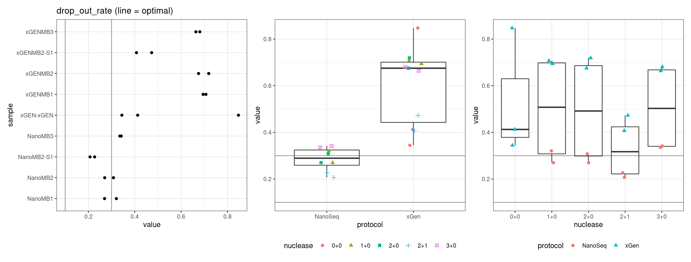
| Version | Author | Date |
|---|---|---|
| faf9130 | Marek Cmero | 2022-05-18 |
| 4da2244 | Marek Cmero | 2022-05-11 |
| cc380cc | Marek Cmero | 2022-05-11 |
| 7c4f403 | Marek Cmero | 2022-04-25 |
| fcb6578 | Marek Cmero | 2022-04-11 |
| a2f0a4a | Marek Cmero | 2022-04-08 |
| c246dc2 | Marek Cmero | 2022-04-07 |
| a860101 | Marek Cmero | 2022-04-06 |
| 81272b2 | Marek Cmero | 2022-04-05 |
| f13e13a | Marek Cmero | 2022-04-05 |
| def2130 | Marek Cmero | 2022-04-05 |
# duplex coverage ratio
metric <- 'duplex_coverage_ratio'
p1 <- ggplot(mm[mm$metric == metric,], aes(protocol, value)) +
gg_prot + geom_hline(yintercept = 30) +
ggtitle('Duplex coverage ratio\n(total cov / duplex cov)')
p2 <- ggplot(mm[mm$metric == metric,], aes(nuclease, value)) +
gg_nuc + geom_hline(yintercept = 30) +
ggtitle('Duplex coverage ratio\n(total cov / duplex cov)')
show(p1 + p2)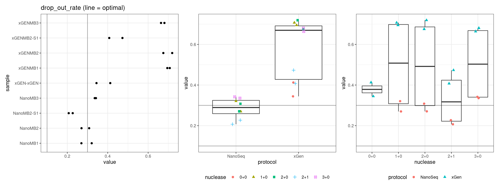
Facet boxplots by nuclease and protocol to show overall results.
ggplot(mm, aes(protocol, value)) +
geom_boxplot() +
theme_bw() +
facet_wrap(~metric, scales = 'free') +
ggtitle('by protocol')
ggplot(mm, aes(nuclease, value)) +
geom_boxplot() +
theme_bw() +
facet_wrap(~metric, scales = 'free') +
ggtitle('by nuclease')
Plots again removing the outlier xGEN rep 1.
mmo <- mm[mm$sample != 'xGEN-xGENRep1',]
mmo$replicate <- str_split(mmo$sample, 'Rep') %>% lapply(., dplyr::last) %>% unlist() %>% as.numeric()
mmo$sample <- str_split(mmo$sample, 'Rep') %>% lapply(., dplyr::first) %>% unlist()
ggplot(mmo, aes(protocol, value)) +
geom_boxplot() +
theme_bw() +
facet_wrap(~metric, scales = 'free') +
ggtitle('by protocol')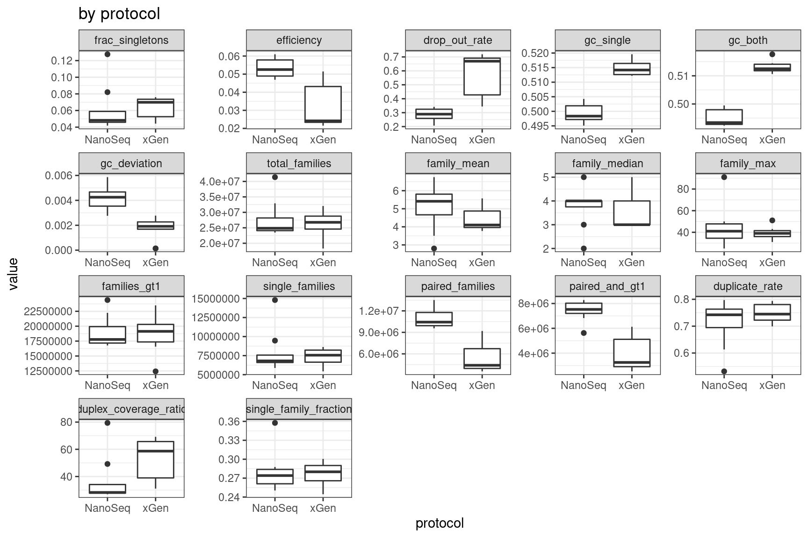
ggplot(mmo, aes(nuclease, value)) +
geom_boxplot() +
theme_bw() +
facet_wrap(~metric, scales = 'free') +
ggtitle('by nuclease')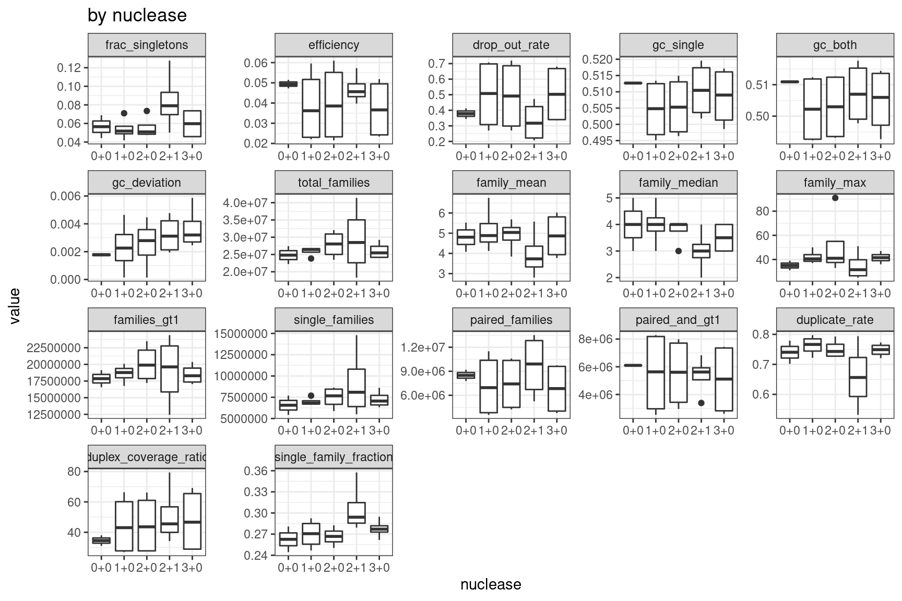
Summary plot including separated by all experimental factors.
ggplot(mmo, aes(sample, value, colour = protocol, shape = nuclease)) +
geom_point() +
theme_bw() +
theme(axis.text.x = element_text(angle = 90)) +
facet_wrap(~metric, scales = 'free') +
scale_colour_brewer(palette = 'Dark2') +
ggtitle('by protocol')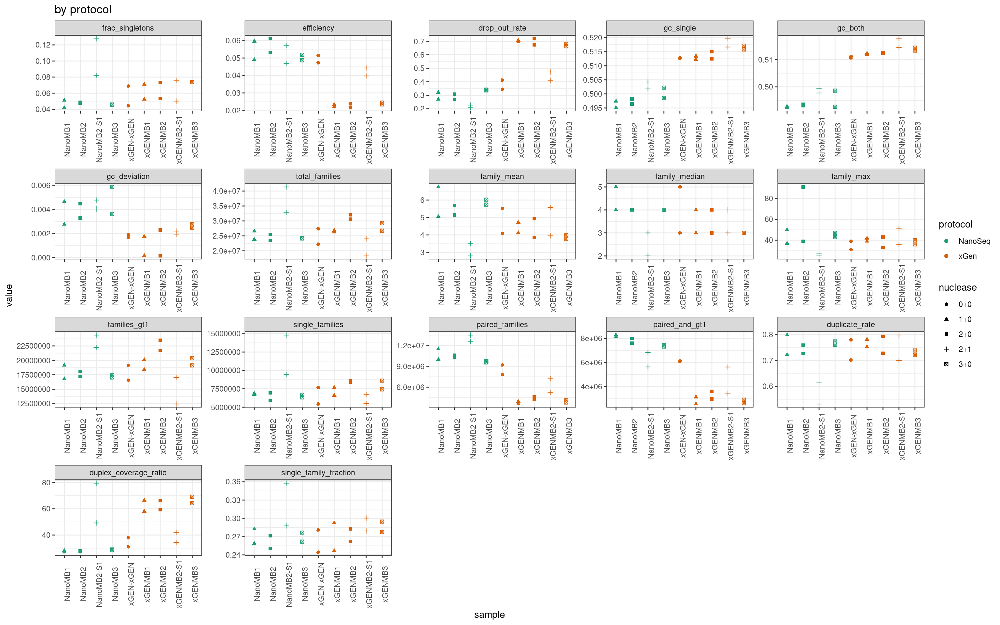
For each metric, take the average of each replicate and perform a two-sided, unpaired T-test between protocols.
stats <- NULL
metric_names <- unique(mm$metric) %>% as.character()
for(metric_name in metric_names) {
nano <- mm[mm$metric == metric_name & mm$protocol == 'NanoSeq',]
xgen <- mm[mm$metric == metric_name & mm$protocol == 'xGen',]
nano_vals <- data.table(nano)[, mean(value), by = nuclease]$V1
xgen_vals <- data.table(xgen)[, mean(value), by = nuclease]$V1
wtest <- t.test(nano_vals, xgen_vals)
stats <- rbind(stats,
data.frame(metric = metric_name, pvalue = wtest$p.value))
}
stats$significant <- stats$pvalue < 0.05
print(stats) metric pvalue significant
1 frac_singletons 0.3509205995 FALSE
2 efficiency 0.0016455448 TRUE
3 drop_out_rate 0.0016563300 TRUE
4 gc_deviation 0.0195493871 TRUE
5 family_mean 0.2739786956 FALSE
6 family_median 0.3816330944 FALSE
7 family_max 0.4142481163 FALSE
8 families_gt1 0.6326687504 FALSE
9 paired_families 0.0006261990 TRUE
10 paired_and_gt1 0.0003304955 TRUE
11 duplicate_rate 0.9225366816 FALSE
12 duplex_coverage_ratio 0.3166974439 FALSERerun tests removing outlier (xGEN rep1). The results are similar.
stats <- NULL
for(metric_name in metric_names) {
nano <- mmo[mmo$metric == metric_name & mmo$protocol == 'NanoSeq',]
xgen <- mmo[mmo$metric == metric_name & mmo$protocol == 'xGen',]
nano_vals <- data.table(nano)[, mean(value), by = nuclease]$V1
xgen_vals <- data.table(xgen)[, mean(value), by = nuclease]$V1
wtest <- t.test(nano_vals, xgen_vals)
stats <- rbind(stats,
data.frame(metric = metric_name, pvalue = wtest$p.value))
}
stats$significant <- stats$pvalue < 0.05
print(stats) metric pvalue significant
1 frac_singletons 0.885668764 FALSE
2 efficiency 0.017624387 TRUE
3 drop_out_rate 0.010803300 TRUE
4 gc_deviation 0.002863331 TRUE
5 family_mean 0.408145893 FALSE
6 family_median 0.617803978 FALSE
7 family_max 0.517858472 FALSE
8 families_gt1 0.914651102 FALSE
9 paired_families 0.001878931 TRUE
10 paired_and_gt1 0.002903205 TRUE
11 duplicate_rate 0.469189762 FALSE
12 duplex_coverage_ratio 0.214507629 FALSEWe consider a two-way ANOVA, modelling the protocol, Mung Bean Unit and S1 Unit variables, as well as the interaction effect between the units and the protocol.
stats <- NULL
metric_names <- unique(mm$metric) %>% as.character()
for(metric_name in metric_names) {
x <- mm[mm$metric == metric_name,]
x$MungBeanUnit <- as.factor(x$`Mung bean unit`)
x$S1Unit <- as.factor(x$`S1 unit`)
x <- x[,c('MungBeanUnit', 'S1Unit', 'protocol', 'nuclease', 'value')]
x_aov <- aov(value ~ MungBeanUnit * protocol + S1Unit * protocol, data = x) %>% summary() %>% dplyr::first()
stats <- rbind(stats,
data.frame(metric = metric_name,
variable = rownames(x_aov)[1:5],
pvalue = x_aov[['Pr(>F)']][1:5]))
}
stats$significant <- stats$pvalue < 0.05
print(stats) metric variable pvalue significant
1 frac_singletons MungBeanUnit 0.3179447536 FALSE
2 frac_singletons protocol 0.9702278541 FALSE
3 frac_singletons S1Unit 0.8553539457 FALSE
4 frac_singletons MungBeanUnit:protocol 0.9858376372 FALSE
5 frac_singletons protocol:S1Unit 0.8540792709 FALSE
6 efficiency MungBeanUnit 0.6743588660 FALSE
7 efficiency protocol 0.0033776091 TRUE
8 efficiency S1Unit 0.4674622674 FALSE
9 efficiency MungBeanUnit:protocol 0.8509682597 FALSE
10 efficiency protocol:S1Unit 0.2278366157 FALSE
11 drop_out_rate MungBeanUnit 0.4118682293 FALSE
12 drop_out_rate protocol 0.0002566346 TRUE
13 drop_out_rate S1Unit 0.0904262242 FALSE
14 drop_out_rate MungBeanUnit:protocol 0.8387881526 FALSE
15 drop_out_rate protocol:S1Unit 0.3182162279 FALSE
16 gc_deviation MungBeanUnit 0.5321833114 FALSE
17 gc_deviation protocol 0.0087584727 TRUE
18 gc_deviation S1Unit 0.7094314628 FALSE
19 gc_deviation MungBeanUnit:protocol 0.4019325303 FALSE
20 gc_deviation protocol:S1Unit 0.9145680596 FALSE
21 family_mean MungBeanUnit 0.3721341384 FALSE
22 family_mean protocol 0.2541550650 FALSE
23 family_mean S1Unit 0.2914711924 FALSE
24 family_mean MungBeanUnit:protocol 0.2723545197 FALSE
25 family_mean protocol:S1Unit 0.1501250836 FALSE
26 family_median MungBeanUnit 0.6347857947 FALSE
27 family_median protocol 0.4810155294 FALSE
28 family_median S1Unit 0.3250056081 FALSE
29 family_median MungBeanUnit:protocol 0.4997581250 FALSE
30 family_median protocol:S1Unit 0.3250056081 FALSE
31 family_max MungBeanUnit 0.3849414781 FALSE
32 family_max protocol 0.5270991535 FALSE
33 family_max S1Unit 0.1424841525 FALSE
34 family_max MungBeanUnit:protocol 0.9819905871 FALSE
35 family_max protocol:S1Unit 0.0605658200 FALSE
36 families_gt1 MungBeanUnit 0.1793349230 FALSE
37 families_gt1 protocol 0.9876271265 FALSE
38 families_gt1 S1Unit 0.6881757434 FALSE
39 families_gt1 MungBeanUnit:protocol 0.6170001142 FALSE
40 families_gt1 protocol:S1Unit 0.0301632029 TRUE
41 paired_families MungBeanUnit 0.3217761699 FALSE
42 paired_families protocol 0.0002319573 TRUE
43 paired_families S1Unit 0.1990511038 FALSE
44 paired_families MungBeanUnit:protocol 0.9226482412 FALSE
45 paired_families protocol:S1Unit 0.8092463937 FALSE
46 paired_and_gt1 MungBeanUnit 0.6527042939 FALSE
47 paired_and_gt1 protocol 0.0007082361 TRUE
48 paired_and_gt1 S1Unit 0.8872835419 FALSE
49 paired_and_gt1 MungBeanUnit:protocol 0.5304733713 FALSE
50 paired_and_gt1 protocol:S1Unit 0.2688705912 FALSE
51 duplicate_rate MungBeanUnit 0.3209743574 FALSE
52 duplicate_rate protocol 0.6617113407 FALSE
53 duplicate_rate S1Unit 0.4855983121 FALSE
54 duplicate_rate MungBeanUnit:protocol 0.8160371321 FALSE
55 duplicate_rate protocol:S1Unit 0.5516726318 FALSE
56 duplex_coverage_ratio MungBeanUnit 0.0515969116 FALSE
57 duplex_coverage_ratio protocol 0.0059993368 TRUE
58 duplex_coverage_ratio S1Unit 0.4875101164 FALSE
59 duplex_coverage_ratio MungBeanUnit:protocol 0.0621558351 FALSE
60 duplex_coverage_ratio protocol:S1Unit 0.0041291841 TRUEWe remove the outlier xGEN rep 1 and test again.
stats <- NULL
metric_names <- unique(mmo$metric) %>% as.character()
for(metric_name in metric_names) {
x <- mmo[mmo$metric == metric_name,]
x$MungBeanUnit <- as.factor(x$`Mung bean unit`)
x$S1Unit <- as.factor(x$`S1 unit`)
x <- x[,c('MungBeanUnit', 'S1Unit', 'protocol', 'nuclease', 'value')]
x_aov <- aov(value ~ MungBeanUnit * protocol + S1Unit * protocol, data = x) %>% summary() %>% dplyr::first()
stats <- rbind(stats,
data.frame(metric = metric_name,
variable = rownames(x_aov)[1:5],
pvalue = x_aov[['Pr(>F)']][1:5]))
}
stats$significant <- stats$pvalue < 0.05
print(stats) metric variable pvalue significant
1 frac_singletons MungBeanUnit 3.747242e-01 FALSE
2 frac_singletons protocol 6.061218e-01 FALSE
3 frac_singletons S1Unit 2.820185e-02 TRUE
4 frac_singletons MungBeanUnit:protocol 1.145001e-01 FALSE
5 frac_singletons protocol:S1Unit 2.714409e-02 TRUE
6 efficiency MungBeanUnit 2.943575e-02 TRUE
7 efficiency protocol 8.567087e-07 TRUE
8 efficiency S1Unit 4.375525e-02 TRUE
9 efficiency MungBeanUnit:protocol 2.583454e-01 FALSE
10 efficiency protocol:S1Unit 3.175014e-03 TRUE
11 drop_out_rate MungBeanUnit 4.996962e-04 TRUE
12 drop_out_rate protocol 2.459532e-09 TRUE
13 drop_out_rate S1Unit 2.501322e-05 TRUE
14 drop_out_rate MungBeanUnit:protocol 9.115253e-02 FALSE
15 drop_out_rate protocol:S1Unit 1.679681e-03 TRUE
16 gc_deviation MungBeanUnit 5.973605e-02 FALSE
17 gc_deviation protocol 1.140481e-04 TRUE
18 gc_deviation S1Unit 4.637927e-01 FALSE
19 gc_deviation MungBeanUnit:protocol 5.772604e-02 FALSE
20 gc_deviation protocol:S1Unit 8.311211e-01 FALSE
21 family_mean MungBeanUnit 4.646379e-01 FALSE
22 family_mean protocol 8.429941e-02 FALSE
23 family_mean S1Unit 1.077790e-01 FALSE
24 family_mean MungBeanUnit:protocol 6.294463e-02 FALSE
25 family_mean protocol:S1Unit 3.389191e-02 TRUE
26 family_median MungBeanUnit 4.629868e-01 FALSE
27 family_median protocol 3.164774e-01 FALSE
28 family_median S1Unit 1.678507e-01 FALSE
29 family_median MungBeanUnit:protocol 2.615312e-01 FALSE
30 family_median protocol:S1Unit 1.678507e-01 FALSE
31 family_max MungBeanUnit 8.985047e-01 FALSE
32 family_max protocol 4.901973e-01 FALSE
33 family_max S1Unit 1.144701e-01 FALSE
34 family_max MungBeanUnit:protocol 9.783491e-01 FALSE
35 family_max protocol:S1Unit 4.537604e-02 TRUE
36 families_gt1 MungBeanUnit 4.921202e-01 FALSE
37 families_gt1 protocol 9.709211e-01 FALSE
38 families_gt1 S1Unit 3.554965e-01 FALSE
39 families_gt1 MungBeanUnit:protocol 1.121914e-01 FALSE
40 families_gt1 protocol:S1Unit 2.152397e-04 TRUE
41 paired_families MungBeanUnit 1.158679e-02 TRUE
42 paired_families protocol 2.650844e-08 TRUE
43 paired_families S1Unit 1.825979e-03 TRUE
44 paired_families MungBeanUnit:protocol 4.727076e-01 FALSE
45 paired_families protocol:S1Unit 4.522724e-01 FALSE
46 paired_and_gt1 MungBeanUnit 3.715875e-01 FALSE
47 paired_and_gt1 protocol 4.877137e-07 TRUE
48 paired_and_gt1 S1Unit 7.110938e-01 FALSE
49 paired_and_gt1 MungBeanUnit:protocol 4.055773e-02 TRUE
50 paired_and_gt1 protocol:S1Unit 1.317773e-02 TRUE
51 duplicate_rate MungBeanUnit 2.028567e-01 FALSE
52 duplicate_rate protocol 9.553308e-02 FALSE
53 duplicate_rate S1Unit 1.519542e-02 TRUE
54 duplicate_rate MungBeanUnit:protocol 7.348826e-02 FALSE
55 duplicate_rate protocol:S1Unit 3.151836e-02 TRUE
56 duplex_coverage_ratio MungBeanUnit 2.480884e-01 FALSE
57 duplex_coverage_ratio protocol 6.668694e-04 TRUE
58 duplex_coverage_ratio S1Unit 3.194763e-01 FALSE
59 duplex_coverage_ratio MungBeanUnit:protocol 1.030421e-02 TRUE
60 duplex_coverage_ratio protocol:S1Unit 4.306854e-04 TRUEmm$replicate <- str_split(mm$sample, 'Rep') %>% lapply(., dplyr::last) %>% unlist() %>% as.numeric()
mm$sample <- str_split(mm$sample, 'Rep') %>% lapply(., dplyr::first) %>% unlist()
mm <- mm[,c('sample', 'metric', 'value', 'protocol', 'nuclease', 'replicate')]
dm <- reshape2::dcast(mm, sample + protocol + nuclease + replicate ~ metric)
cols <- c(brewer.pal(5, 'Greens')[2:5],
brewer.pal(6, 'Blues')[2:6])
names(cols) <- as.factor(dm$sample) %>% levels()
ggplot(dm, aes(frac_singletons, drop_out_rate, colour=sample)) +
geom_point() +
theme_bw() +
scale_colour_manual(values = cols) +
ggtitle('Singletons vs. drop-out rate')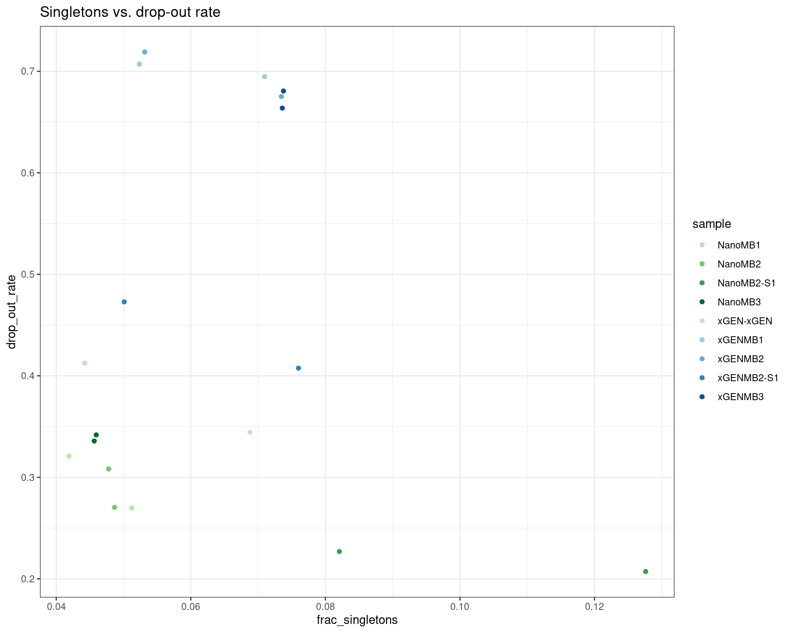
| Version | Author | Date |
|---|---|---|
| a860101 | Marek Cmero | 2022-04-06 |
ggplot(dm, aes(efficiency, duplicate_rate, colour=sample)) +
geom_point() +
theme_bw() +
scale_colour_manual(values = cols) +
ggtitle('Efficiency vs. duplicate rate')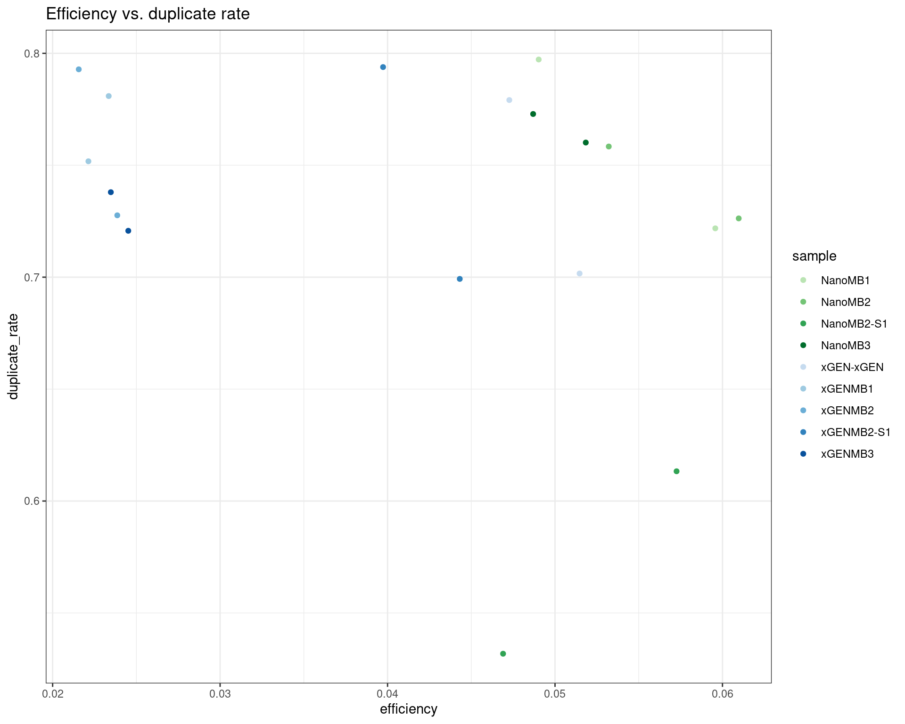
| Version | Author | Date |
|---|---|---|
| a860101 | Marek Cmero | 2022-04-06 |
ggplot(dm, aes(efficiency, drop_out_rate, colour=sample)) +
geom_point() +
theme_bw() +
scale_colour_manual(values = cols) +
ggtitle('Efficiency vs. drop-out rate')
| Version | Author | Date |
|---|---|---|
| a860101 | Marek Cmero | 2022-04-06 |
ggplot(dm, aes(efficiency, duplex_coverage_ratio, colour=sample)) +
geom_point() +
theme_bw() +
scale_colour_manual(values = cols) +
ggtitle('Efficiency vs. duplex coverage ratio')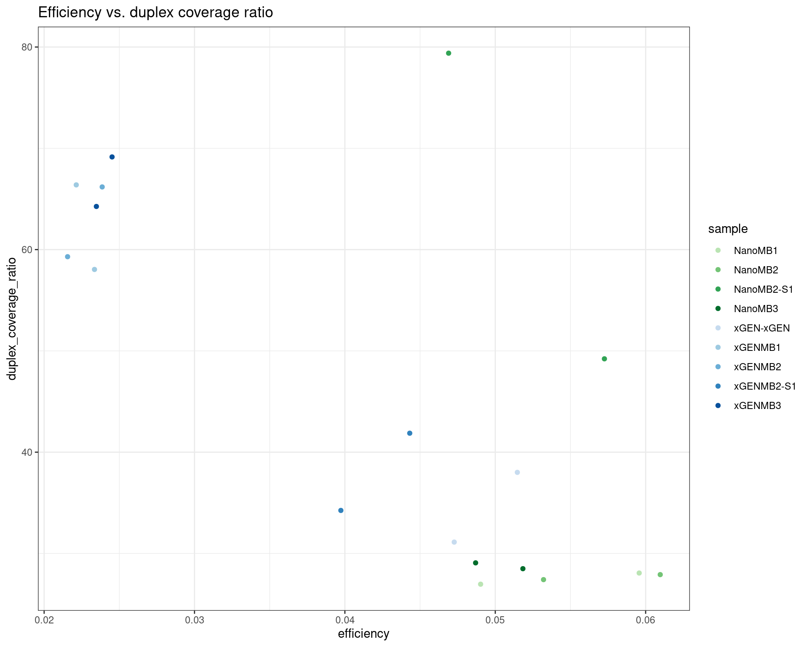
| Version | Author | Date |
|---|---|---|
| a860101 | Marek Cmero | 2022-04-06 |
ggplot(dm, aes(duplicate_rate, duplex_coverage_ratio, colour=sample)) +
geom_point() +
theme_bw() +
scale_colour_manual(values = cols) +
ggtitle('Duplicate rate vs. duplex coverage ratio')
| Version | Author | Date |
|---|---|---|
| a860101 | Marek Cmero | 2022-04-06 |
Upset plot showing duplex variant calls. Variants were called in areas with at least 4x coverage with at least 2 supporting reads and a VAF of \(\geq2\).
ulist <- NULL
for(sample in sample_names) {
ids <- var_df[var_df$sample %in% sample,]$id
if (length(ids) > 0) {
ulist[[sample]] <- ids
}
}
upset(fromList(ulist), order.by='freq', nsets=length(sample_names))
The pipeline was run only requiring a single read on each strand. Here we plot the difference in mean coverage. As we would expect, skipping SSC step increases duplex coverage. For some samples with disproportionately higher single-read families (NanoMB-S1), this increases duplex coverage significantly more.
ccov <- inner_join(qmap_cons_cov,
qmap_cons_cov_nossc,
by = 'Sample',
suffix = c('_ssc', '_nossc')) %>%
inner_join(., qmap_cov, by = 'Sample')
ccov$sample <- str_split(ccov$Sample, 'Rep') %>% lapply(., dplyr::first) %>% unlist()
ccov$duplex_cov_ratio <- ccov$coverage / ccov$coverage_ssc
ccov$duplex_cov_ratio_noscc <- ccov$coverage / ccov$coverage_nossc
p1 <- ggplot(ccov, aes(coverage_ssc, coverage_nossc, colour = sample)) +
geom_point() +
theme_bw() +
xlim(0, 550) +
ylim(0, 550) +
xlab('with SSC') +
ylab('without SSC') +
geom_abline(slope = 1) +
theme(legend.position = 'left') +
scale_colour_brewer(palette = 'Dark2') +
ggtitle('Mean duplex coverage')
p2 <- ggplot(ccov, aes(duplex_cov_ratio, duplex_cov_ratio_noscc, colour = sample)) +
geom_point() +
theme_bw() +
xlim(0, 100) +
ylim(0, 100) +
xlab('with SSC') +
ylab('without SSC') +
geom_abline(slope = 1) +
theme(legend.position = 'right') +
scale_colour_brewer(palette = 'Dark2') +
ggtitle('Duplex coverage ratio')
p1 + p2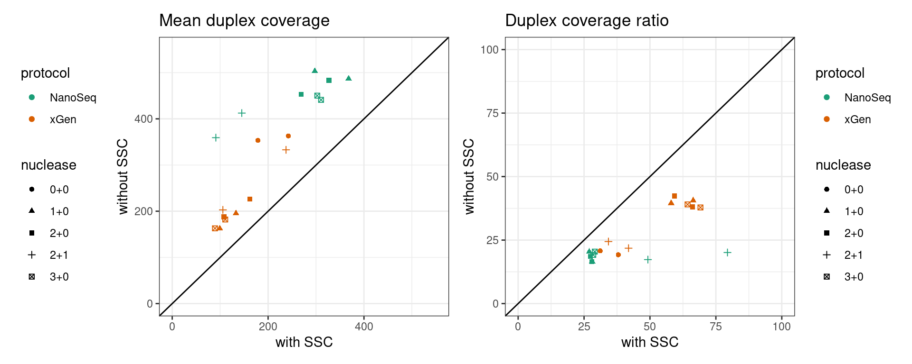
| Version | Author | Date |
|---|---|---|
| faf9130 | Marek Cmero | 2022-05-18 |
Here we show the variant calls from the duplex sequences without SSC in the same Upset plot format.
ulist <- NULL
for(sample in sample_names) {
ids <- var_df_nossc[var_df_nossc$sample %in% sample,]$id
if (length(ids) > 0) {
ulist[[sample]] <- ids
}
}
upset(fromList(ulist), order.by='freq', nsets=length(sample_names))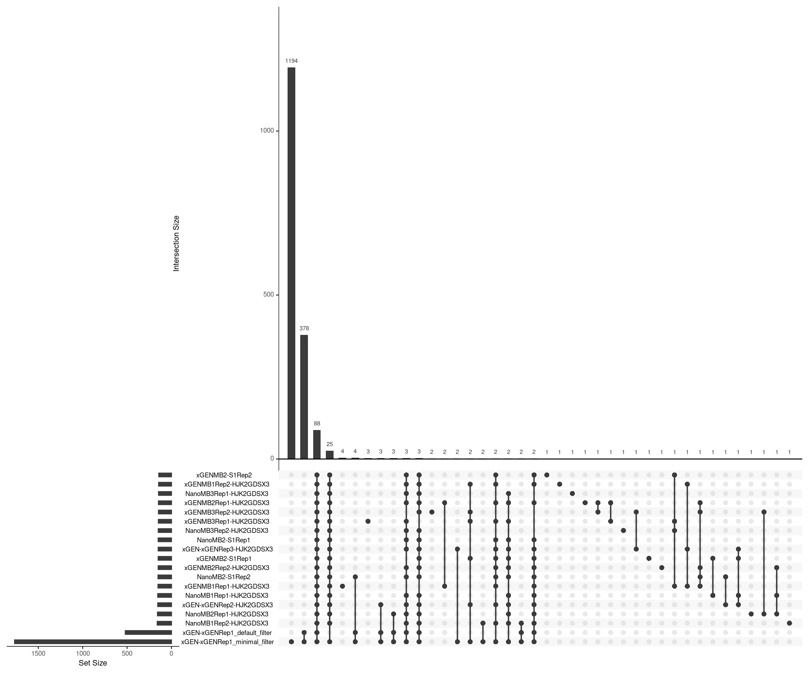
| Version | Author | Date |
|---|---|---|
| faf9130 | Marek Cmero | 2022-05-18 |
Estimate the number of input cells using formula \(d / e / c = n\) where d = mean duplex coverage, e = duplex efficiency, c = coverage per genome equivalent and n = number of cells.
qcc <- qmap_cons_cov
coverage_per_genome <- 10
qcc$Sample <- gsub('-HJK2GDSX3', '', qcc$Sample)
mc <- inner_join(metrics, qcc, by = c('sample' = 'Sample'))
mc$estimated_cells <- mc$coverage / mc$efficiency / coverage_per_genome
ggplot(mc[!mc$sample %in% 'xGEN-xGENRep1',], aes(sample, estimated_cells)) +
geom_bar(stat = 'identity') +
theme_minimal() +
coord_flip()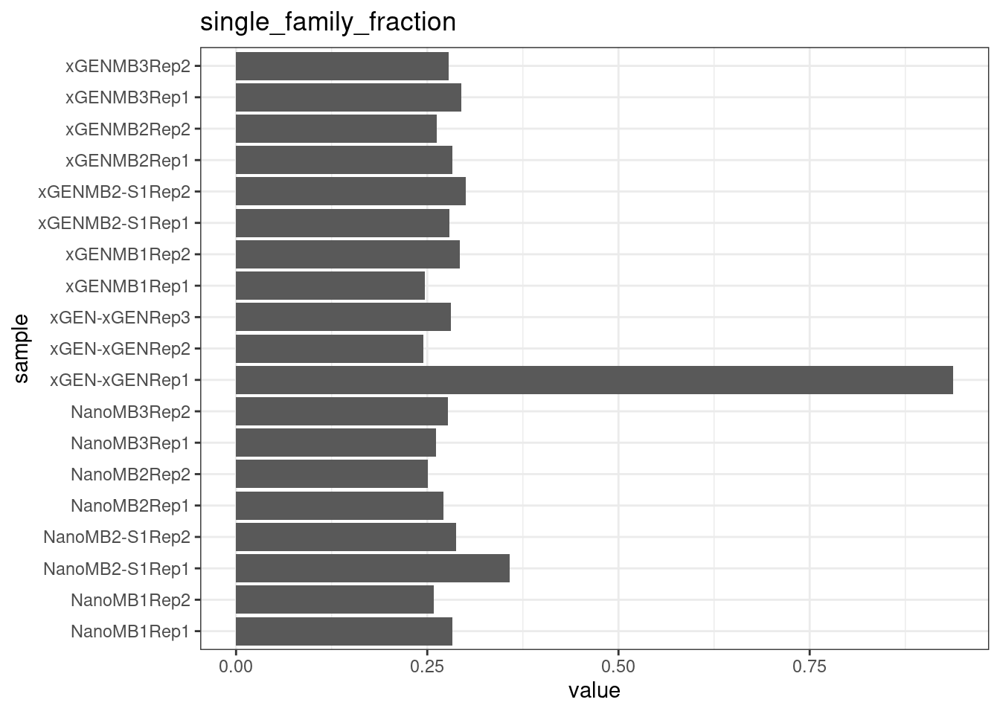
| Version | Author | Date |
|---|---|---|
| b524238 | Marek Cmero | 2022-05-26 |
| cc380cc | Marek Cmero | 2022-05-11 |
| 7c4f403 | Marek Cmero | 2022-04-25 |
| fcb6578 | Marek Cmero | 2022-04-11 |
| a2f0a4a | Marek Cmero | 2022-04-08 |
| c246dc2 | Marek Cmero | 2022-04-07 |
| a860101 | Marek Cmero | 2022-04-06 |
| 81272b2 | Marek Cmero | 2022-04-05 |
| f13e13a | Marek Cmero | 2022-04-05 |
| def2130 | Marek Cmero | 2022-04-05 |
| 953b83e | Marek Cmero | 2022-03-31 |
| 05412f6 | Marek Cmero | 2022-03-27 |
sessionInfo()R version 4.0.5 (2021-03-31)
Platform: x86_64-pc-linux-gnu (64-bit)
Running under: CentOS Linux 7 (Core)
Matrix products: default
BLAS: /stornext/System/data/apps/R/R-4.0.5/lib64/R/lib/libRblas.so
LAPACK: /stornext/System/data/apps/R/R-4.0.5/lib64/R/lib/libRlapack.so
locale:
[1] LC_CTYPE=en_US.UTF-8 LC_NUMERIC=C
[3] LC_TIME=en_US.UTF-8 LC_COLLATE=en_US.UTF-8
[5] LC_MONETARY=en_US.UTF-8 LC_MESSAGES=en_US.UTF-8
[7] LC_PAPER=en_US.UTF-8 LC_NAME=C
[9] LC_ADDRESS=C LC_TELEPHONE=C
[11] LC_MEASUREMENT=en_US.UTF-8 LC_IDENTIFICATION=C
attached base packages:
[1] stats4 parallel stats graphics grDevices utils datasets
[8] methods base
other attached packages:
[1] vcfR_1.12.0 UpSetR_1.4.0 RColorBrewer_1.1-2
[4] patchwork_1.1.1 readxl_1.3.1 seqinr_4.2-8
[7] Rsamtools_2.6.0 Biostrings_2.58.0 XVector_0.30.0
[10] GenomicRanges_1.42.0 GenomeInfoDb_1.26.7 IRanges_2.24.1
[13] S4Vectors_0.28.1 BiocGenerics_0.36.1 stringr_1.4.0
[16] tibble_3.1.5 here_1.0.1 dplyr_1.0.7
[19] data.table_1.14.0 ggplot2_3.3.5 workflowr_1.6.2
loaded via a namespace (and not attached):
[1] sass_0.4.0 viridisLite_0.4.0 splines_4.0.5
[4] jsonlite_1.7.2 bslib_0.3.0 assertthat_0.2.1
[7] memuse_4.2-1 highr_0.9 GenomeInfoDbData_1.2.4
[10] cellranger_1.1.0 yaml_2.2.1 pillar_1.6.4
[13] lattice_0.20-44 glue_1.4.2 digest_0.6.27
[16] promises_1.2.0.1 colorspace_2.0-0 Matrix_1.3-2
[19] htmltools_0.5.2 httpuv_1.6.3 plyr_1.8.6
[22] pkgconfig_2.0.3 zlibbioc_1.36.0 purrr_0.3.4
[25] scales_1.1.1 whisker_0.4 later_1.3.0
[28] BiocParallel_1.24.1 git2r_0.28.0 mgcv_1.8-35
[31] farver_2.1.0 generics_0.1.1 ellipsis_0.3.2
[34] withr_2.4.2 magrittr_2.0.1 crayon_1.4.2
[37] evaluate_0.14 fs_1.5.0 fansi_0.5.0
[40] nlme_3.1-152 MASS_7.3-53.1 vegan_2.5-7
[43] tools_4.0.5 lifecycle_1.0.1 munsell_0.5.0
[46] cluster_2.1.2 ade4_1.7-18 compiler_4.0.5
[49] jquerylib_0.1.4 rlang_0.4.12 grid_4.0.5
[52] RCurl_1.98-1.3 labeling_0.4.2 bitops_1.0-7
[55] rmarkdown_2.11 gtable_0.3.0 DBI_1.1.1
[58] reshape2_1.4.4 R6_2.5.1 gridExtra_2.3
[61] knitr_1.33 pinfsc50_1.2.0 fastmap_1.1.0
[64] utf8_1.2.2 rprojroot_2.0.2 permute_0.9-5
[67] ape_5.5 stringi_1.7.5 Rcpp_1.0.7
[70] vctrs_0.3.8 tidyselect_1.1.1 xfun_0.22